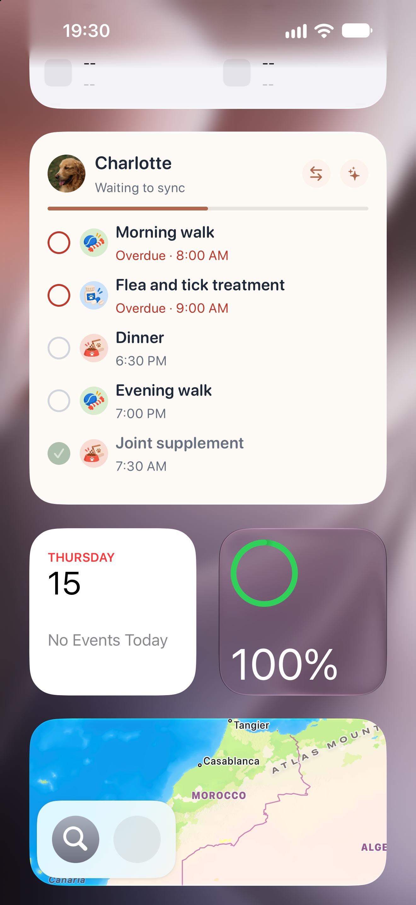

PETTO
HOME SCREEN WIDGET
Today's care list, right on your
home screen.

No app to open
See what's overdue at a glance
Walks, meals and meds in one list
Unlock your phone. See the walk. Feel the guilt. Do the walk.
Free on iOS & Android
Link in bio